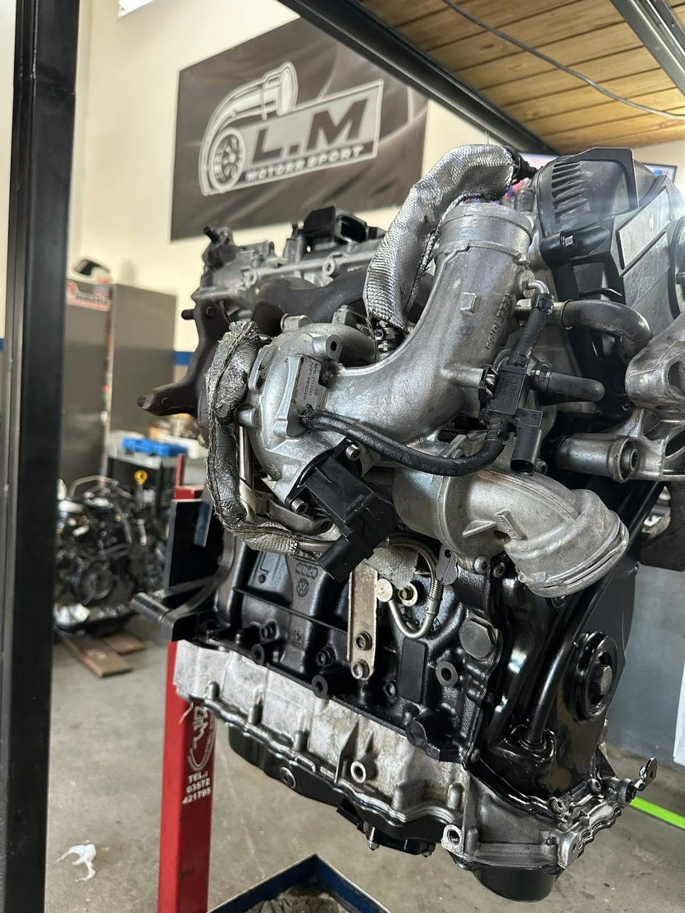
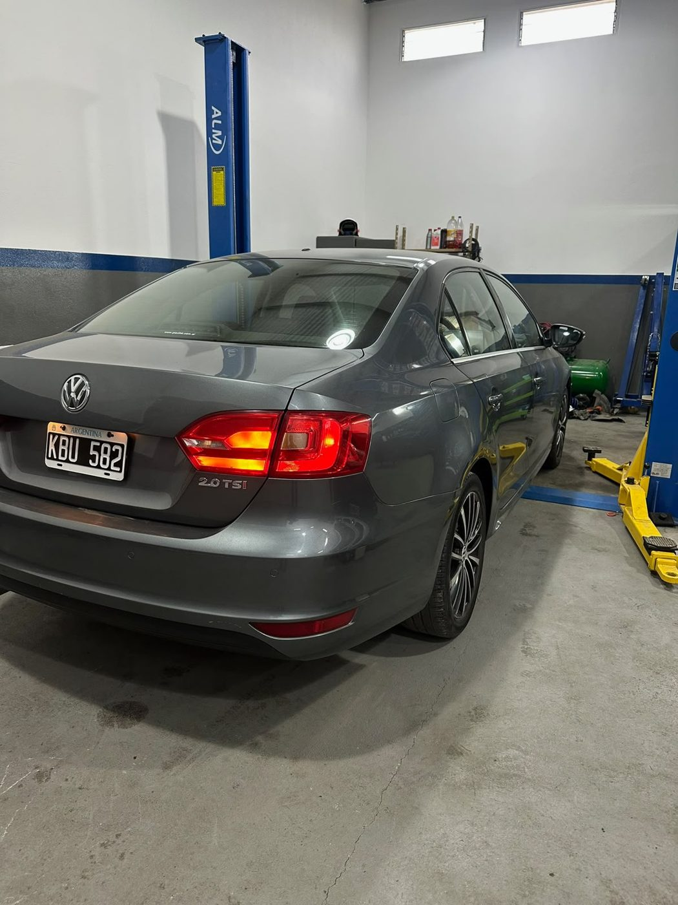

Quién hace el trabajo
Lucas Monzo, al frente de cada auto que entra.
Dueño y mecánico del taller. Cada trabajo pasa por sus manos, desde el diagnóstico hasta la entrega.
VolkswagenAudiAutos turboAlta gama
Grupo VAG significa Volkswagen y Audi. Más de cinco años trabajando con la misma gama de vehículos: ya conocemos las mañas de cada auto.

Con un especialista cuidás el bolsillo: se diagnostica bien antes de tocar nada.
Dueño y mecánico del taller. Cada trabajo pasa por sus manos, desde el diagnóstico hasta la entrega.



Es el grupo de marcas de Volkswagen, entre ellas Volkswagen y Audi, que son las que más atendemos.
Sí. Nuestro fuerte es el grupo VAG, pero también atendemos autos turbo y de alta gama de otras marcas, con el mismo scanner y las mismas herramientas.
Sí, usamos scanner multimarca para encontrar la falla real antes de presupuestar.
Ofrecemos ajustes de potencia para autos turbo y de alta gama. Consultanos tu caso por WhatsApp.
En Pje. Calfucir 839, Córdoba. Atendemos de lunes a viernes, de 9 a 20 hs.